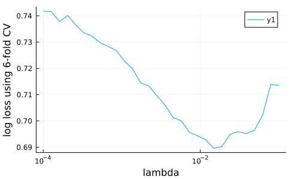
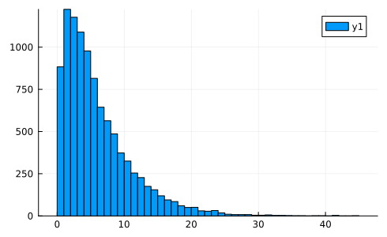
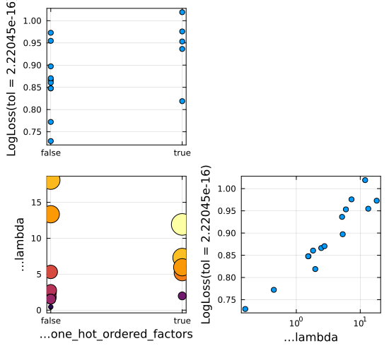

Tutorial 4. Tuning hyperparameters
Goals: Learn how to:
- Tune (optimize) a single model hyperparameter visually, by plotting learning curves
- Implement the optimization of one or more hyperparameters by wrapping a model in a tuning strategy
To run the code in this tutorial in a live Julia session, first follow the instructions given here.
Naive tuning of a single parameter
The most naive way to tune a single hyperparameter is to use learning_curve, which we already saw in Tutorial 2. Let's see this in the Horse Colic classification problem, a case where the parameter to be tuned is nested (because the model is a pipeline).
Here is the Horse Colic data again, with the type coercions we already discussed in Tutorial 1:
using MLJ
import Downloads, CSV, DataFrames
url = "https://raw.githubusercontent.com/ablaom/"*
"MachineLearningInJulia2020/"*
"for-MLJ-version-0.16/data/horse.csv"
csv_file = Downloads.download(url)
horse = CSV.read(csv_file, DataFrames.DataFrame)
coerce!(horse, autotype(horse));
coerce!(horse, Count => Continuous);
coerce!(
horse,
:surgery => Multiclass,
:age => Multiclass,
:mucous_membranes => Multiclass,
:capillary_refill_time => Multiclass,
:outcome => Multiclass,
:cp_data => Multiclass,
);
schema(horse)
y, X = unpack(horse, ==(:outcome));
schema(X)┌─────────────────────────┬──────────────────┬─────────────────────────────────┐
│ names │ scitypes │ types │
├─────────────────────────┼──────────────────┼─────────────────────────────────┤
│ surgery │ Multiclass{2} │ CategoricalValue{Int64, UInt32} │
│ age │ Multiclass{2} │ CategoricalValue{Int64, UInt32} │
│ rectal_temperature │ Continuous │ Float64 │
│ pulse │ Continuous │ Float64 │
│ respiratory_rate │ Continuous │ Float64 │
│ temperature_extremities │ OrderedFactor{4} │ CategoricalValue{Int64, UInt32} │
│ mucous_membranes │ Multiclass{6} │ CategoricalValue{Int64, UInt32} │
│ capillary_refill_time │ Multiclass{3} │ CategoricalValue{Int64, UInt32} │
│ pain │ OrderedFactor{5} │ CategoricalValue{Int64, UInt32} │
│ peristalsis │ OrderedFactor{4} │ CategoricalValue{Int64, UInt32} │
│ abdominal_distension │ OrderedFactor{4} │ CategoricalValue{Int64, UInt32} │
│ packed_cell_volume │ Continuous │ Float64 │
│ total_protein │ Continuous │ Float64 │
│ surgical_lesion │ OrderedFactor{2} │ CategoricalValue{Int64, UInt32} │
│ cp_data │ Multiclass{2} │ CategoricalValue{Int64, UInt32} │
└─────────────────────────┴──────────────────┴─────────────────────────────────┘
Now for a pipeline model:
LogisticClassifier = @load LogisticClassifier pkg=MLJLinearModels
model = Standardizer |> ContinuousEncoder |> LogisticClassifierProbabilisticPipeline(
standardizer = Standardizer(
features = Symbol[],
ignore = false,
ordered_factor = false,
count = false),
continuous_encoder = ContinuousEncoder(
drop_last = false,
one_hot_ordered_factors = false),
logistic_classifier = LogisticClassifier(
lambda = 2.220446049250313e-16,
gamma = 0.0,
penalty = :l2,
fit_intercept = true,
penalize_intercept = false,
scale_penalty_with_samples = true,
solver = nothing),
cache = true)mach = machine(model, X, y);We now specify a hyperparameter range for this pipeline model:
r = range(model, :(logistic_classifier.lambda), lower = 1e-4, upper=0.1, scale=:log10)NumericRange(0.0001 ≤ logistic_classifier.lambda ≤ 0.1; origin=0.05005, unit=0.04995; on log10 scale)If you're curious, you can see what lambda values this range will generate for a given resolution:
iterator(r, 5)5-element Vector{Float64}:
0.0001
0.0005623413251903491
0.0031622776601683794
0.01778279410038923
0.1using Plots
gr(size=(490,300))
_, _, lambdas, losses = learning_curve(
mach,
range=r,
resampling=CV(nfolds=6),
resolution=30, # default
measure=log_loss,
)
plt=plot(lambdas, losses, xscale=:log10)
xlabel!(plt, "lambda")
ylabel!(plt, "log loss using 6-fold CV")
savefig("learning_curve2.png")"/home/runner/work/MLJTutorial.jl/MLJTutorial.jl/docs/src/notebooks/MLJTutorial/04_tuning/learning_curve2.png"
best_lambda = lambdas[argmin(losses)]0.0117210229753348Self tuning models
A more sophisticated way to view hyperparameter tuning (inspired by mlr) is as a model wrapper. The wrapped model is a new model in its own right and when you fit it, it tunes specified hyperparameters of the model being wrapped, before training on all supplied data. Calling predict on the wrapped model is like calling predict on the original model, but with the hyperparameters already optimized.
In other words, we can think of the wrapped model as a "self-tuning" version of the original.
We now create a self-tuning version of the pipeline above, adding a parameter from the ContinuousEncoder to the parameters we want optimized.
First, let's choose a tuning strategy (from these options). MLJ supports ordinary Grid search (query ?Grid for details). However, as the utility of Grid search is limited to a small number of parameters, and as Grid searches are demonstrated elsewhere (see the resources below) we'll demonstrate RandomSearch here:
tuning = RandomSearch(rng=123)RandomSearch(
bounded = Distributions.Uniform,
positive_unbounded = Distributions.Gamma,
other = Distributions.Normal,
rng = Random.MersenneTwister(123))In this strategy each parameter is sampled according to a pre-specified prior distribution that is fit to the one-dimensional range object constructed using range as before. While one has a lot of control over the specification of the priors (run ?RandomSearch for details) we'll let the algorithm generate these priors automatically.
Unbounded ranges and sampling
In MLJ a range does not have to be bounded. In a RandomSearch a positive unbounded range is sampled using a Gamma distribution, by default:
r = range(
model,
:(logistic_classifier.lambda),
lower=0,
origin=6,
unit=5,
scale=:log10,
)NumericRange(0 ≤ logistic_classifier.lambda ≤ Inf; origin=6.0, unit=5.0; on log10 scale)The scale in a range is ignored in a RandomSearch, unless it is a function. (It is relevant in a Grid search, not demonstrated here.) Note however, the choice of scale does effect how later plots will look.
Let's see what sampling using a Gamma distribution is going to mean for this range:
import Distributions
sampler_r = sampler(r, Distributions.Gamma)
plt = histogram(rand(sampler_r, 10000), nbins=50)
savefig("gamma_sampler.png");
The second parameter that we'll add to this is nominal (finite) and, by default, will be sampled uniformly. Since it is nominal, we specify values instead of upper and lower bounds:
s = range(
model,
:(continuous_encoder.one_hot_ordered_factors),
values = [true, false],
)NominalRange(continuous_encoder.one_hot_ordered_factors = true, false)The tuning wrapper
Now for the wrapper, which is an instance of TunedModel:
tuned_model = TunedModel(
model,
ranges=[r, s],
resampling=CV(nfolds=6),
measures=log_loss,
tuning=tuning,
n=15,
)ProbabilisticTunedModel(
model = ProbabilisticPipeline(
standardizer = Standardizer(features = Symbol[], …),
continuous_encoder = ContinuousEncoder(drop_last = false, …),
logistic_classifier = LogisticClassifier(lambda = 2.220446049250313e-16, …),
cache = true),
tuning = RandomSearch(
bounded = Distributions.Uniform,
positive_unbounded = Distributions.Gamma,
other = Distributions.Normal,
rng = Random.MersenneTwister(123)),
resampling = CV(
nfolds = 6,
shuffle = false,
rng = Random.TaskLocalRNG()),
measure = LogLoss(tol = 2.22045e-16),
weights = nothing,
class_weights = nothing,
operation = nothing,
range = MLJBase.ParamRange[NumericRange(0 ≤ logistic_classifier.lambda ≤ Inf; origin=6.0, unit=5.0; on log10 scale), NominalRange(continuous_encoder.one_hot_ordered_factors = true, false)],
selection_heuristic = MLJTuning.NaiveSelection(nothing),
train_best = true,
repeats = 1,
n = 15,
acceleration = ComputationalResources.CPU1{Nothing}(nothing),
acceleration_resampling = ComputationalResources.CPU1{Nothing}(nothing),
check_measure = true,
cache = true,
compact_history = true,
logger = nothing)We can apply the fit!/predict work-flow to tuned_model just as for any other model:
tuned_mach = machine(tuned_model, X, y)
fit!(tuned_mach)
predict(tuned_mach, rows=1:3)3-element CategoricalDistributions.UnivariateFiniteVector{ScientificTypesBase.Multiclass{3}, Int64, UInt32, Float64}:
UnivariateFinite{ScientificTypesBase.Multiclass{3}}(1=>0.643, 2=>0.244, 3=>0.114)
UnivariateFinite{ScientificTypesBase.Multiclass{3}}(1=>0.658, 2=>0.0938, 3=>0.248)
UnivariateFinite{ScientificTypesBase.Multiclass{3}}(1=>0.884, 2=>0.0727, 3=>0.043)The outcomes of the tuning can be inspected from a detailed report. For example, we have:
rep = report(tuned_mach)
rep.best_modelProbabilisticPipeline(
standardizer = Standardizer(
features = Symbol[],
ignore = false,
ordered_factor = false,
count = false),
continuous_encoder = ContinuousEncoder(
drop_last = false,
one_hot_ordered_factors = false),
logistic_classifier = LogisticClassifier(
lambda = 0.15909603030140035,
gamma = 0.0,
penalty = :l2,
fit_intercept = true,
penalize_intercept = false,
scale_penalty_with_samples = true,
solver = nothing),
cache = true)You can also visualize the random search:
plt = plot(tuned_mach)
savefig("tuning.png");
Finally, let's compare cross-validation estimate of the performance of the self-tuning model with that of the original model (an example of nested resampling):
err = evaluate!(mach, resampling=CV(nfolds=3), measure=log_loss)PerformanceEvaluation object with these fields:
model, tag, measure, operation,
measurement, uncertainty_radius_95, per_fold, per_observation,
fitted_params_per_fold, report_per_fold,
train_test_rows, resampling, repeats
Tag: ProbabilisticPipeline-992
Extract:
┌──────────────────────┬───────────┬─────────────┐
│ measure │ operation │ measurement │
├──────────────────────┼───────────┼─────────────┤
│ LogLoss( │ predict │ 0.782 │
│ tol = 2.22045e-16) │ │ │
└──────────────────────┴───────────┴─────────────┘
┌──────────────────────┬─────────┐
│ per_fold │ 1.96*SE │
├──────────────────────┼─────────┤
│ [0.83, 0.721, 0.794] │ 0.0773 │
└──────────────────────┴─────────┘
tuned_err = evaluate!(tuned_mach, resampling=CV(nfolds=3), measure=log_loss)PerformanceEvaluation object with these fields:
model, tag, measure, operation,
measurement, uncertainty_radius_95, per_fold, per_observation,
fitted_params_per_fold, report_per_fold,
train_test_rows, resampling, repeats
Tag: ProbabilisticTunedModel-915
Extract:
┌──────────────────────┬───────────┬─────────────┐
│ measure │ operation │ measurement │
├──────────────────────┼───────────┼─────────────┤
│ LogLoss( │ predict │ 0.779 │
│ tol = 2.22045e-16) │ │ │
└──────────────────────┴───────────┴─────────────┘
┌───────────────────────┬─────────┐
│ per_fold │ 1.96*SE │
├───────────────────────┼─────────┤
│ [0.798, 0.802, 0.738] │ 0.0496 │
└───────────────────────┴─────────┘
Tutorial 4 Resources
- From the MLJ manual:
- From Data Science Tutorials:
- Tuning a model
- Crabs with XGBoost
Gridtuning in stages for a tree-boosting model with many parameters - Boston with LightGBM -
Gridtuning for another popular tree-booster - Boston with Flux - optimizing batch size in a simple neural network regressor
- UCI Horse Colic Data Set
Tutorial 4 Exercises
Exercise 8
This exercise continues our analysis of the King County House price prediction problem (Exercise 3, Tutorial 1, and Tutorial 3):
import Downloads, CSV
import DataFrames
url = "https://raw.githubusercontent.com/ablaom/"*
"MachineLearningInJulia2020/for-MLJ-version-0.16/"*
"data/house.csv"
csv_file = Downloads.download(url)
house = CSV.read(csv_file, DataFrames.DataFrame)
coerce!(house, autotype(house))
coerce!(house, Count => Continuous, :zipcode => Multiclass)
y, X = unpack(house, ==(:price), rng=123);
schema(X)┌───────────────┬───────────────────┬───────────────────────────────────┐
│ names │ scitypes │ types │
├───────────────┼───────────────────┼───────────────────────────────────┤
│ bedrooms │ OrderedFactor{13} │ CategoricalValue{Int64, UInt32} │
│ bathrooms │ OrderedFactor{30} │ CategoricalValue{Float64, UInt32} │
│ sqft_living │ Continuous │ Float64 │
│ sqft_lot │ Continuous │ Float64 │
│ floors │ OrderedFactor{6} │ CategoricalValue{Float64, UInt32} │
│ waterfront │ OrderedFactor{2} │ CategoricalValue{Int64, UInt32} │
│ view │ OrderedFactor{5} │ CategoricalValue{Int64, UInt32} │
│ condition │ OrderedFactor{5} │ CategoricalValue{Int64, UInt32} │
│ grade │ OrderedFactor{12} │ CategoricalValue{Int64, UInt32} │
│ sqft_above │ Continuous │ Float64 │
│ sqft_basement │ Continuous │ Float64 │
│ yr_built │ Continuous │ Float64 │
│ zipcode │ Multiclass{70} │ CategoricalValue{Int64, UInt32} │
│ lat │ Continuous │ Float64 │
│ long │ Continuous │ Float64 │
│ sqft_living15 │ Continuous │ Float64 │
│ sqft_lot15 │ Continuous │ Float64 │
│ is_renovated │ OrderedFactor{2} │ CategoricalValue{Bool, UInt32} │
└───────────────┴───────────────────┴───────────────────────────────────┘
Your task will be to tune the following pipeline regression model, which includes a gradient tree boosting component:
EvoTreeRegressor = @load EvoTreeRegressor
tree_booster = EvoTreeRegressor(nrounds = 70)
model = ContinuousEncoder |> tree_boosterDeterministicPipeline(
continuous_encoder = ContinuousEncoder(
drop_last = false,
one_hot_ordered_factors = false),
evo_tree_regressor = EvoTreeRegressor(
loss = :mse,
metric = :mse,
nrounds = 70,
bagging_size = 1,
early_stopping_rounds = 9223372036854775807,
early_stopping_tolerance = 0.0,
L2 = 1.0,
lambda = 0.0,
gamma = 0.0,
eta = 0.1,
max_depth = 6,
min_weight = 1.0,
rowsample = 1.0,
colsample = 1.0,
nbins = 64,
alpha = 0.5,
alphas = [0.1, 0.5, 0.9],
monotone_constraints = Dict{Int64, Int64}(),
tree_type = :binary,
seed = 123,
device = :cpu),
cache = true)(a) Construct a bounded range r1 for the evo_tree_booster parameter max_depth, varying between 4 and 14.
(b) For the colsample parameter of the EvoTreeRegressor, define the range
r2 = range(model, :(evo_tree_regressor.nbins), values = [32, 64, 128])NominalRange(evo_tree_regressor.nbins = 32, 64, 128)(a)
Optimize model over these the parameter ranges r1 and r2 using a random search with uniform priors (the default). Use Holdout() resampling, and implement your search by first constructing a "self-tuning" wrap of model, as described above. Make mae (mean absolute error) the loss function that you optimize, and search over a total of 40 combinations of hyperparameters. If you have time, plot the results of your search. Feel free to use all available data.
(c) Evaluate the best model found in the search using 3-fold cross-validation and compare with that of the self-tuning model (which is different!). Setting data hygiene concerns aside, use all available data.
This page was generated using Literate.jl.